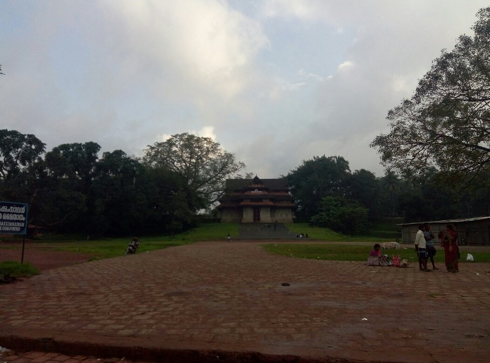

Love visiting the ancient temples of India?
One cannot miss going to the Vadakkunnathan Temple in Thrissur.
The temple is known for its beautiful and old pics which are rich
in the culture and heritage of Kerala. The Vadakkunnathan Temple
in Kerala has received the award of excellence from the UNESCO.
It is one of the oldest temples in Kerala, which has Mural paintings
quite 400 years old, and the Vadakkunnathan Temple is 1000 years old.
If you want to enjoy the architecture of Vadakkunnathan Temple, then you must visit in Thrissur.
The temple has architectural beauty, history, heritage and also culture. People of Thrissu
r has maintained its culture and tradition of Vadakkunnathan temple. There are shrines Of
Maha Vishnu and Shankara Narayana which are located at the temple. It also has the largest
dance hall called Koothambalam,
which reflects the architecture of Kerala.
There are various traditional performances that are held at the festival
of Vadakkunnathan Temple, and it is known as Nangyar Koothu. There is Thiruvambadi
Krishna temple and Paramekkavu Devi Temple Outside the temple. The temple receives
hundreds of devotees every day, especially at the weekend and on Mondays people have
to use faith and believe in the temple.
Nathan Temple in Thrissur has one of the best in the traditional architectural sense of Kerala.